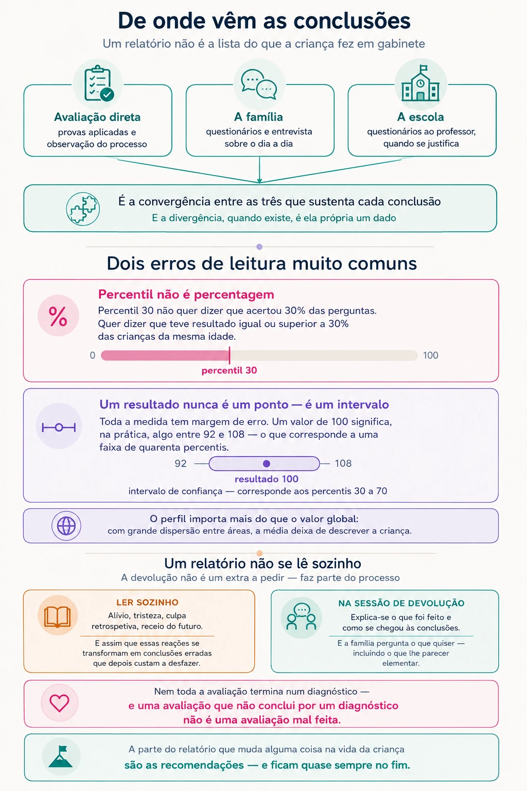

A devolução dos resultados e como ler um relatório
Um relatório não é uma lista do que a criança fez em gabinete: é a integração de várias fontes, e é a convergência entre elas que sustenta cada conclusão. Por isso não se lê sozinho — a devolução é parte do processo, não um extra.
A situação
A avaliação terminou. Segue-se a sessão de devolução — o momento em que se explica o que foi feito, o que se concluiu e o que se propõe — e, dela, um relatório escrito.
O que costuma acontecer a seguir é sempre o mesmo: procura-se os números, procura-se o diagnóstico, e lê-se o resto depois — se se ler. É compreensível, mas costuma ser exatamente ao contrário do que serve. A parte do relatório que muda alguma coisa na vida da criança são as recomendações, e essas ficam quase sempre no fim.
E há um mal-entendido anterior a esse: o de que um relatório traduz o que a criança fez naquelas horas de gabinete. Não é assim que se constrói, e ler assim leva a conclusões erradas sobre o que ali está escrito.
Sobre o que vem antes — a primeira consulta, o que organizar e o que dizer à criança — há um texto próprio: Preparar a ida à consulta de psicologia.
O que se sabe
Um relatório não se lê sozinho
Um relatório é um documento técnico. Usa terminologia própria, apresenta resultados que exigem enquadramento, e contém formulações que podem ser lidas de várias maneiras por quem não trabalha com elas todos os dias. Entregar um relatório sem o explicar é entregar metade do trabalho.
Na minha prática, a sessão de devolução é obrigatória — não é uma possibilidade que a família tenha de pedir, é parte do processo e está contemplada desde o início. É nessa sessão que se explica o que foi feito, como se chegou às conclusões, o que significam na prática, e o que se propõe a seguir. E é onde a família pergunta o que quiser, incluindo o que lhe parecer elementar.
Há uma razão clínica para isto, além da razão técnica. Receber um relatório mobiliza coisas — alívio por finalmente haver um nome, tristeza, culpa retrospetiva, receio do futuro. Ler sozinho, sem ninguém que enquadre, é como essas reações se transformam em conclusões erradas que depois custam a desfazer.

De onde vêm as conclusões
Esta é a parte do trabalho que menos se vê no documento final, e é a que sustenta tudo o resto. As conclusões de uma avaliação não decorrem de nenhum resultado isolado, nem sequer do conjunto dos resultados obtidos em gabinete. Decorrem do cruzamento de três origens que, sozinhas, seriam insuficientes:
- A avaliação direta com a criança — os resultados dos instrumentos aplicados e as relações entre eles, mas também a observação do processo: como aborda uma tarefa, o que faz quando erra, quanto tempo sustenta o esforço, como reage ao que é difícil. Esta observação diz frequentemente mais do que a pontuação obtida.
- Os questionários e a entrevista à família — o funcionamento em casa, a história de desenvolvimento, a evolução ao longo do tempo, e informação clínica relevante como saúde, sono, acontecimentos de vida e intervenções anteriores.
- Os questionários à escola, sempre que se justifique — o funcionamento em contexto de grupo e perante exigência académica, que é onde muitas dificuldades se tornam visíveis e outras se atenuam.
É a convergência entre estas origens que dá solidez a uma conclusão. Vários diagnósticos exigem, aliás, que os sinais estejam presentes em mais do que um contexto — pelo que a informação de casa e da escola não é acessória: é constitutiva da própria decisão diagnóstica.
Quando todas as fontes apontam na mesma direção, a formulação é segura. Quando divergem, isso é em si um dado, e um dos mais informativos — uma dificuldade que só aparece num contexto aponta para algo diferente de uma que aparece em todos. O relatório deve dizê-lo, em vez de escolher a fonte que confirma a hipótese inicial.
Daí que um relatório sério nunca seja uma lista de pontuações com uma etiqueta no fim. A parte que exige formação é precisamente esta: integrar dados que não dizem todos o mesmo, e explicar o que deles decorre.
Porque não basta a avaliação em gabinete
A avaliação direta recolhe uma amostra de comportamento em condições padronizadas. É a sua força: permite comparar o desempenho desta criança com o de crianças da mesma idade, em tarefas administradas da mesma maneira a toda a gente.
Mas o que ali se observa é o desempenho naquelas tarefas, naquele dia, com aquele examinador — numa situação individual, silenciosa e com um adulto atento só àquela criança. É quase o oposto de uma sala de aula. Uma criança que dormiu mal, que estava ansiosa, ou que simplesmente não se sentiu à vontade, mostra menos do que sabe; e há dificuldades que, por definição, não se manifestam num contexto tão protegido.
É precisamente por isso que existem as outras fontes. Os questionários à família e à escola não são um complemento acessório nem uma formalidade: são o que permite saber se o que se observou em gabinete corresponde ao funcionamento no dia a dia, e o que só aparece quando há vinte e cinco crianças na sala e trinta minutos para acabar. Sem eles, uma avaliação descreveria apenas o desempenho numa situação que a criança quase nunca vive.
Isto é particularmente relevante nas idades mais baixas, em que a atenção é mais curta e o ritmo de desenvolvimento mais rápido — um resultado obtido aos quatro anos envelhece depressa.
Percentil não é percentagem
É o erro de leitura mais comum, e o que mais assusta sem razão. Um percentil 30 não significa que a criança acertou 30% das perguntas. Significa que o seu desempenho foi igual ou superior ao de 30% das crianças da mesma idade — e inferior ao das restantes 70%.
O percentil 50 é a mediana, não um resultado medíocre. Metade das crianças fica abaixo dele, por definição. Uma boa parte da angústia gerada pelos relatórios vem de se ler uma escala relativa como se fosse uma nota escolar.
O intervalo de confiança é o número mais honesto do relatório
Nenhuma medida é exata. Todos os testes têm erro de medida, e é por isso que os resultados devem ser apresentados como um intervalo e não como um valor único. Ver «entre 92 e 108» em vez de «100» não é sinal de imprecisão do trabalho — é sinal de que o relatório está a ser honesto sobre os limites do instrumento.
Um resultado de 100 com erro-padrão de 4 pontos corresponde, com 95% de confiança, a um intervalo aproximado de 92 a 108 — ou seja, algures entre o percentil 30 e o percentil 70. O número único esconde uma faixa de quarenta percentis.
Daqui decorre uma consequência prática: diferenças pequenas entre resultados não são diferenças. Se dois valores têm intervalos que se sobrepõem, não se pode afirmar que um é superior ao outro. Comparar subtestes ponto a ponto, como se fossem notas, produz leituras que os dados não sustentam.
O perfil importa mais do que o valor global
Duas crianças com o mesmo resultado global podem ter perfis completamente diferentes — uma forte no raciocínio e frágil na velocidade de processamento, outra o inverso. São situações distintas, que pedem apoios distintos. É por isso que a leitura de um relatório não se resume a procurar um número.
E quando há grande dispersão dentro do próprio perfil, o valor global perde significado: representa uma média de coisas que não andam juntas, e descreve mal a criança.
Nem toda a avaliação termina num diagnóstico
Vale a pena dizê-lo com clareza, porque é fonte de desilusão frequente: uma avaliação que não conclui por um diagnóstico não é uma avaliação mal feita. É, muitas vezes, uma avaliação bem feita.
As razões pelas quais isso acontece são várias e todas legítimas:
- As dificuldades existem, mas não em intensidade ou número suficientes para preencher os critérios. Os critérios de diagnóstico têm limiares, e há situações que ficam abaixo deles sem deixarem de merecer apoio.
- As dificuldades manifestam-se num único contexto. Vários diagnósticos exigem que os sinais apareçam em mais do que um ambiente. Uma dificuldade que só existe na escola, ou só em casa, aponta para outra coisa — e essa outra coisa importa perceber.
- O que se observa explica-se melhor por outra via — uma fase de desenvolvimento, um acontecimento de vida, sono insuficiente, ansiedade, uma exigência desajustada à idade.
- A criança é ainda pequena e o quadro não está estabilizado. Nesses casos, o rigor manda aguardar e reavaliar, e não antecipar um rótulo.
Em qualquer destes cenários o relatório continua a ter valor, e frequentemente mais do que teria com um diagnóstico apressado: descreve o perfil de competências e de fragilidades, explica o que está a acontecer, e indica o que fazer. O apoio não depende de haver diagnóstico. As medidas de suporte à aprendizagem, por exemplo, mobilizam-se em função das necessidades identificadas, não da existência de um rótulo.
Uma avaliação que exclui hipóteses faz um trabalho tão real quanto uma que confirma. Saber que não é dislexia é informação — evita meses de intervenção mal dirigida.
Um diagnóstico não é uma descrição da pessoa
Esta é a distinção mais difícil de manter, e a que mais influencia o que acontece a seguir. Um diagnóstico é uma forma abreviada de nomear um conjunto de dificuldades que aparecem juntas com frequência suficiente para ter nome, e que dá acesso a determinadas respostas.
Não descreve a personalidade da criança, não prevê o que ela virá a ser, e não substitui aquilo que a família já sabe sobre ela. O risco, depois de um relatório, é o diagnóstico passar a explicar tudo — cada dificuldade e cada comportamento lidos através dele, e a criança a desaparecer atrás da categoria.
O que fazer
Ler pelo fim. Começar pelas conclusões e recomendações, e só depois voltar aos resultados. É a ordem inversa da que o documento sugere, mas é a que serve — as recomendações são a parte acionável, e merecem ser lidas com atenção disponível.
Dar tempo antes de tomar decisões. Receber um relatório mobiliza coisas — alívio por finalmente haver um nome, tristeza, culpa retrospetiva, receio do futuro. Tudo isso é esperado. Mas decisões tomadas nos primeiros dias tendem a ser mais reativas do que as tomadas duas semanas depois.
Levar perguntas escritas à devolução. Chegar à sessão com as dúvidas anotadas muda o que dela se leva. É fácil, no momento, ficar sem saber o que perguntar e lembrar-se de tudo no carro. Não há perguntas descabidas sobre um documento que trata do próprio filho.
Procurar como as conclusões foram sustentadas. Um bom relatório mostra o raciocínio, não apenas o resultado: que fontes convergiram, o que divergiu, e porque se concluiu o que se concluiu. Se a conclusão surge sem se perceber de onde vem, é legítimo perguntar.
Verificar se as perguntas iniciais foram respondidas. Vale a pena reler o que se foi perguntar na primeira consulta e confirmar que o relatório responde a isso. É o critério mais simples para avaliar se a avaliação cumpriu o seu objetivo.
Perguntar o que não corresponde ao que se conhece. Se alguma coisa no relatório não bate certo com a criança que se conhece, isso é informação relevante e deve ser dito. Pode significar que o desempenho naquele dia não foi representativo, ou que aquela competência se manifesta de forma diferente noutro contexto. Não é pôr em causa o trabalho — é acrescentar-lhe o que só a família observa.
Separar o que se partilha do documento completo. A escola precisa das recomendações que dependem dela, não do relatório inteiro. Um relatório contém informação clínica, dados de história pessoal e familiar, e observações que não são necessárias a todos os intervenientes. A criança tem direito a essa reserva.
Decidir o que se conta à criança — e contar alguma coisa. O silêncio total raramente protege: a criança sabe que foi avaliada e nota que os adultos falam do assunto. Uma explicação ajustada à idade, que nomeie dificuldades e competências, costuma tranquilizar mais do que preocupar. A partir da adolescência, o próprio deve ter acesso ao essencial das conclusões — é sobre ele.
Guardar o relatório e voltar a ele daqui a um ano. Um relatório é uma fotografia, não um veredicto. Reler ao fim de algum tempo, à luz do que entretanto aconteceu, é frequentemente mais esclarecedor do que a primeira leitura.
Quando procurar ajuda
Há situações em que vale a pena voltar a quem avaliou, ou procurar outra opinião:
- O relatório apresenta números mas poucas recomendações práticas, ou recomendações demasiado genéricas para serem aplicadas.
- O relatório foi entregue sem sessão de devolução, ou ficaram dúvidas por esclarecer depois dela.
- As perguntas que motivaram o pedido não estão respondidas no documento.
- Não se percebe em que dados assentam as conclusões, ou o relatório apresenta pontuações sem integração.
- O que está descrito não corresponde, de forma significativa, à criança que a família conhece.
- A avaliação decorreu em condições que podem tê-la afetado — doença, cansaço, sofrimento marcado no momento.
- O relatório tem mais de dois ou três anos e está a ser usado para decisões atuais, sobretudo se a criança era pequena à data.
- A leitura do relatório gerou angústia que se mantém, ou está a alterar a forma como a família olha para a criança.
Este último ponto merece atenção própria. Um relatório destina-se a orientar decisões, não a reconfigurar a relação com um filho. Quando é isso que está a acontecer, a conversa a ter é outra — e vale a pena tê-la.
Depois da devolução
Duas páginas para preencher nos dias seguintes: o que se reteve pelas próprias palavras, as recomendações a pôr em prática com responsável e data, o que se conversa com a criança, e as dúvidas que só surgem depois.
Sobre o que vem antes: Preparar a ida à consulta de psicologia.
Este texto tem fins informativos e não substitui avaliação nem acompanhamento profissional. Cada situação exige uma leitura própria.
Referências
- American Educational Research Association, American Psychological Association, & National Council on Measurement in Education. (2014). Standards for educational and psychological testing. American Educational Research Association.
- American Psychiatric Association. (2022). Diagnostic and statistical manual of mental disorders (5.ª ed., texto revisto). https://doi.org/10.1176/appi.books.9780890425787
A interpretação de percentis, do erro-padrão de medida e dos intervalos de confiança segue os princípios psicométricos estabelecidos nas normas acima.